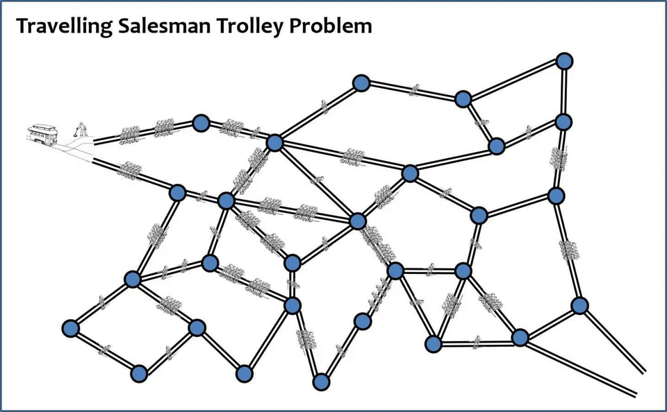
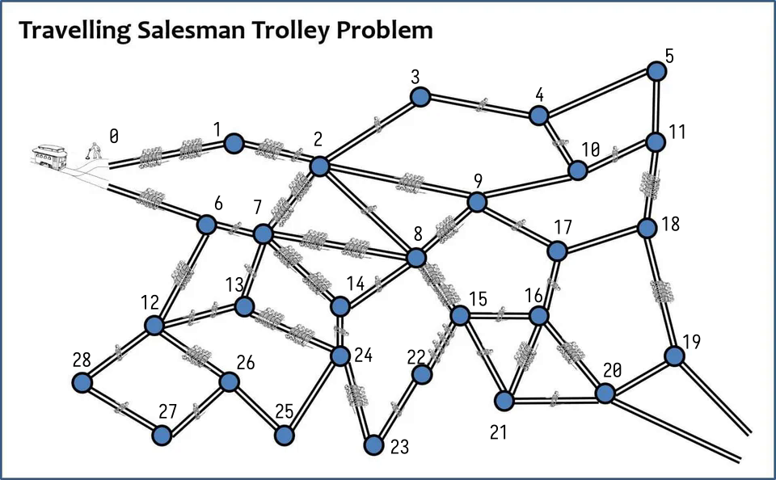
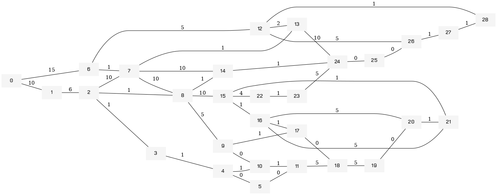

A Possibly Correct Solution to the Travling Salseman Trolly Problem
Table of Contents
Introduction
While on discord I saw this meme.

I decided to write an optimal solution for it because I was bored. I also decided to add this to my website because why not. I have yet to formally prove that it actually works, and I probably should do that, but it seems that it should in fact work just fine. Basically I take the problem to be finding the optimal route through the graph with free backtracking.
Algorithm Description
In the case of an undirected graph you first consider a node, obtain the weights of the edges going from it and sort them in a list. Then you traverse along the lowest weighted edge in your list. Once you have reached this new edge you discard the previous edge, get the new edges, discard any edges that go to a visited node in both of your lists, sort them, and then merge them. You then proceed to again choose the lowest weighted edge from your list and visit the node that goes through that edge. You continue this until all nodes have been visited
So long as the graph is not fully connected I the time complexity should tend towards \(O(n\ log(n))\), should it be more fully connected I think the time complexity will be more similar to \(O(n^2)\) for the optimal solution.
The proof is trivial and left as an exercise to the reader. 1 I am lazy. I might prove it eventually. Please talk to me later
Implementation
So to accompany the above description let's have a quick implementation in Clojure.
Defining the Graph
So to start I use the graph I defined in my implementing graphs tutorial and define the graph using it. So we just import it from the shared library I have in the public section of my wiki.
(ns tstp (:require mylibs.graphs :refer [graph edge dot-repr]))
But before we define the graph we must first look at the problem itself and come up with a series of names for the nodes so that a graph can be made for it.

Below is the code that implements it. As you can see, it's actually pretty long.
(def tstp-graph (-> (apply graph (range 29)) ;; 0 (edge 0 1 10) (edge 0 6 15) ;; 1 (edge 1 2 6) ;; 2 (edge 2 3 1) (edge 2 8 1) (edge 2 7 10) ;; 3 (edge 3 4 1) ;; 4 (edge 4 5 0) (edge 4 10 1) ;; 5 (edge 5 11 0) ;; 6 (edge 6 7 1) (edge 6 12 5) ;; 7 (edge 7 8 10) (edge 7 14 10) (edge 7 13 1) ;; 8 (edge 8 9 5) (edge 8 14 1) (edge 8 15 10) ;; 9 (edge 9 10 0) (edge 9 17 1) ;; 10 (edge 10 11 1) ;; 11 (edge 11 18 5) ;; 12 (edge 12 13 2) (edge 12 26 5) (edge 12 28 1) ;; 13 (edge 13 24 10) ;; 14 (edge 14 24 1) ;; 15 (edge 15 16 1) (edge 15 21 1) (edge 15 22 4) ;; 16 (edge 16 17 1) (edge 16 20 5) (edge 16 21 5) ;; 17 (edge 17 18 0) ;; 18 (edge 18 19 5) ;; 19 (edge 19 20 0) ;; 20 (edge 20 21 1) ;; 22 (edge 22 23 1) ;; 23 (edge 23 24 5) ;; 24 (edge 24 25 0) ;; 25 (edge 25 26 0) ;; 26 (edge 26 27 1) ;; 27 (edge 27 28 1)))
Using our DOT code we can also check that our graph is correct visually by obtaining the DOT representation (plus the DOT representation is prettier and more clear than the previous one).
(dot-repr tstp-graph)

It doesn't look exactly like the original, but honestly that doesn't matter, it contains all the nodes of the original.
Given how nice it was to just get a DOT representation of a clojure datastructure I think I might end up writing some code to automatically spit out DOT code for various Clojure objects. I think it will, by default, probably just spit out DOT code, but it will also allow you to define custom handling code for different datastructures.
Traversing the Graph
So next we create some functions to traverse this graph and implement our algorithm. First we want an algorithm that, given some set of nodes, will then return the least weighted edge of the set of nodes. Secondarily we want.
Edge Less Than
So first we want to have a predicate that compares the edges and returns true should the first edge be less than the second, which will be fed into our mergesort function.
(defn edge-less-than? a b)
We then we want to create a predicate that compares the weight of two edges, returning.
(defn merge ([left right] (merge < left right)) ([comp [left-head & left-rest :as left] [right-head & right-rest :as right]] (cond (nil? right-head) left (nil? left-head) right (comp left-head right-head) (cons left-head (merge left-rest right)) :else (cons right-head (merge left right-rest))))) (defn mergesort ([coll] (mergesort < coll)) ([comp coll] (let [left (take (/ (count coll) 2) coll) right (drop (count left) coll)] (apply merge comp (if (> (count coll) 2) [(mergesort left) (mergesort right)] [left right])))))
(defn sort-edges)
We also want a function to merge the edges from each new node onto this list of edges sorted by weight, using the same function from our merge sort tutorial.
(defn merge-edges)
As we can see